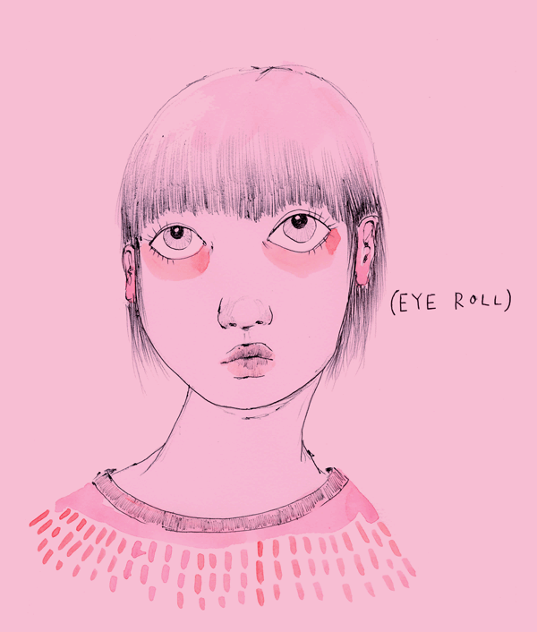
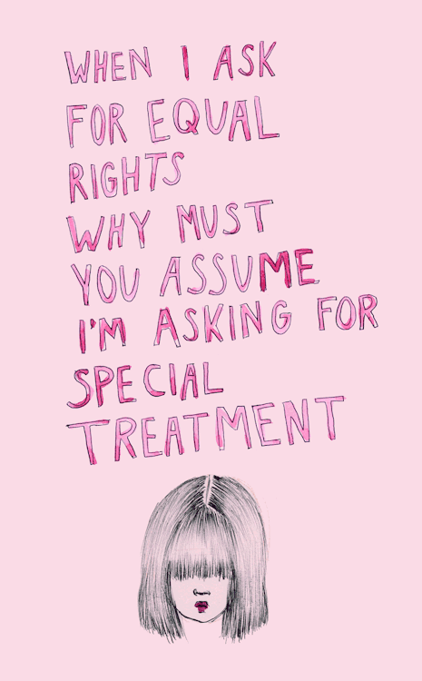
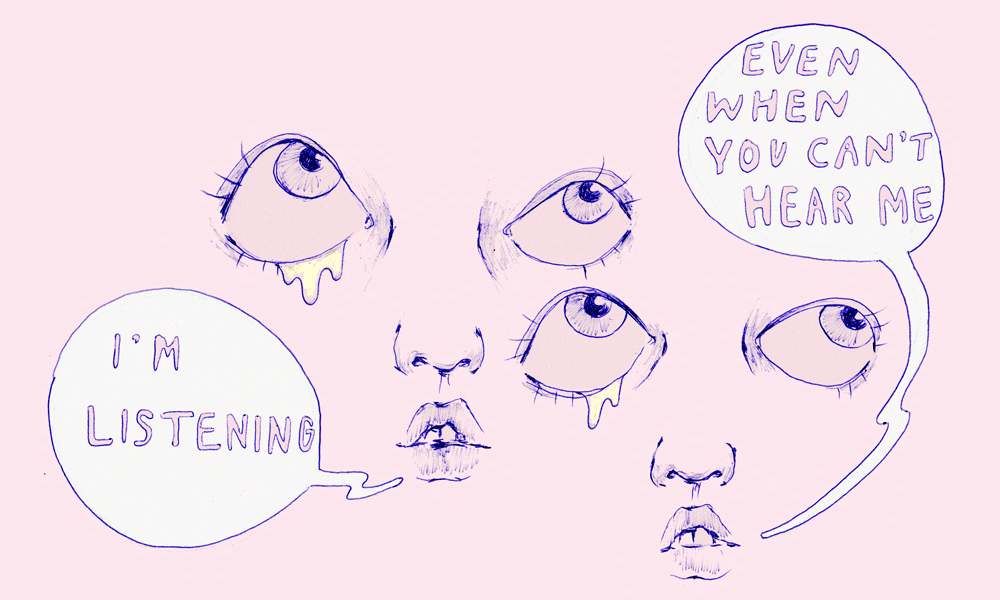
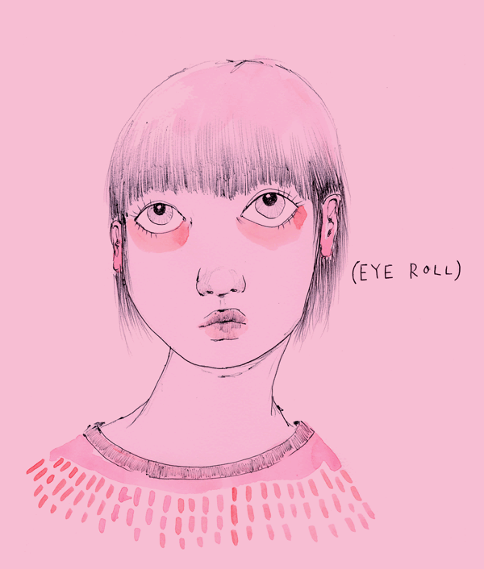
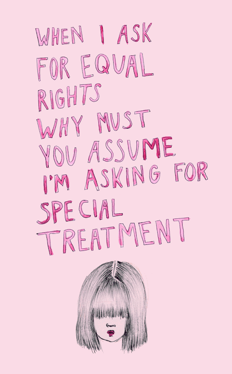
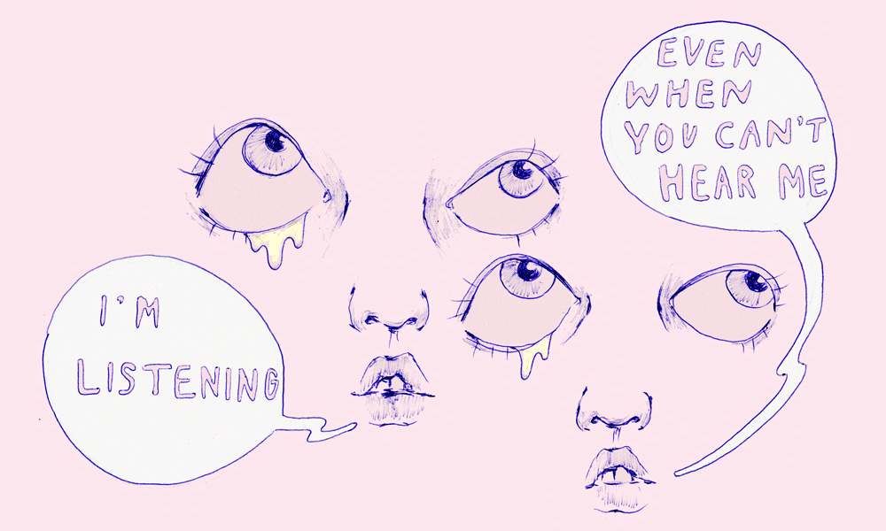

Ambivalently Yours
 





Who is Ambivalently Yours?
This is the story about a fashion worker turned grad student, who struggled to become a feminist artist while clinging to her love of fashion, girl culture, and the color pink. She is an anonymous online persona created to facilitate the exploration of feminist convictions by embracing ambivalent emotions. Ambivalently Yours works from an ambivalent perspective and accepts her conflicting opinions, the passivity of being undecided was transformed into a conscious act of undeciding.
So What Does Ambivalence Mean?
AMBIVALENCE
[AM-BIV-UH-LUHNS]
noun
1. Uncertainty or fluctuation, especially when caused by inability to make a choice or by a simultaneous desire to say or do two opposite or conflicting things.
2. Psychology - the coexistence within an individual of positive and negative feelings toward the same person, object, or action, simultaneously drawing him or her in opposite directions.
What Exactly Does She Do?
To quote queer theorist Jack Halberstam: She explores "feminist politics that issues not from a doing but from an undoing, not from a being or becoming women but from a refusal to be or become a woman as she has been defined and imagined within Western Philosophy.” (Halberstam, Judith. The Queer Art of Failure. Durham: Duke UP, 2011. 124. Print.) It is within this refusal to be and to choose that Ambivalently Yours cultivates relationships of empathy and feminist agency within an online community of in-betweeners.
Okay, But How Does She Go About Doing This?
Since 2011, she has explored ambivalence through the online sharing of illustrations, sound sketches, videos, blog posts, and anonymous notes left in public spaces. These small acts of rebellion are meant as conversation starters, acts of compassion, and exampls of active yet ambivalent resistance.Her drawings, hosted on Tumblr, have become the most important and interactive aspect of her work. A number of them have even gone viral on the Internet.
How Has The Popularity of Her Drawings Affected Her?
As the drawings grew in popularity, they inspired an unsolicited participation from online contributors (often anonymous), who began to share their conflicting emotions with her. In response, she has been illustrating the ambivalence of her social media followers and posting the drawings online. She says the process has helped her explore the potential of political resistance and emotionla empathy that exists within conflicting emotions.